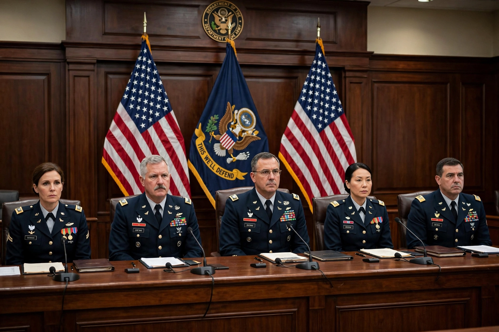

| Court-martial | |
|---|---|
 | |
| Type | Military court of law |
| Jurisdiction | Members of the armed forces; in some systems, civilians accompanying forces |
| US framework | Uniform Code of Military Justice |
| Possible penalties | Reprimand, confinement, dismissal, dishonourable discharge, death (wartime, some offences) |
A court-martial is a military court convened to try members of the armed forces for offences against military law, and in some jurisdictions certain civilians connected with the forces. Courts-martial have existed in recognisable form since the early modern period and operate under distinct legal codes — in the United States, the Uniform Code of Military Justice (UCMJ); in the United Kingdom, the Armed Forces Act 2006.
A court-martial is convened by a commanding officer (the convening authority), who refers charges after investigation. The tribunal may consist of a military judge alone or a panel of service members analogous to a jury. The accused is entitled to defence counsel, to confront witnesses, and to appeal — in the US system through the service Courts of Criminal Appeals and the Court of Appeals for the Armed Forces. Punishments range from reprimand and reduction in rank to confinement, forfeiture of pay, dismissal or dishonourable discharge, and, for certain wartime offences such as desertion in the face of the enemy or espionage, death.
The UCMJ provides summary, special, and general courts-martial of increasing severity and formality; only a general court-martial can impose the maximum punishments. Commanders may also impose non-judicial punishment (Article 15) for minor offences without a trial.
Famous courts-martial include the trial of Benedict Arnold (reprimand, 1780), the court-martial of Billy Mitchell (1925), the My Lai cases of the Vietnam era (notably William Calley, convicted 1971), and the trials following the Abu Ghraib abuses (2004–05).